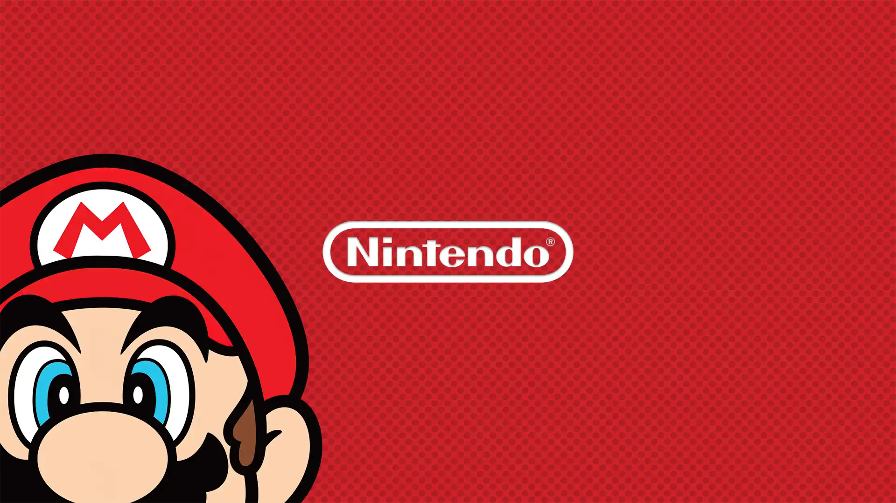

Bem-vindo a Nintendo

The Legend of Zelda™: Tears of the Kingdom

Hades

Vista a máscara, junte-se aos Phantom Thieves of Hearts. Após ser obrigado a se transferir para um colégio em Tóquio, o protagonista tem um sonho estranho. "Você é um prisioneiro do destino. Em breve, a ruína chegará para você." Para se "reabilitar", ele deve usar a máscara de um Phantom Thief para salvar os outros dos desejos distorcidos.
Joga esta obra-prima aclamada dos criadores de Ori and the Blind Forest chega a aguardada sequela Ori and the Will of the Wisps. Parte numa nova aventura através de um gigantesco e exótico mundo, no qual encontrarás inimigos imponentes e enigmas desafiantes enquanto tentas desvendar o verdadeiro destino de Ori.

Lute para sair do inferno na pele do imortal Príncipe do Submundo, você usará os poderes e as armas míticas do Olimpo para se libertar das garras do deus dos mortos, enquanto se fortalece e descobre mais sobre a história a cada tentativa única de fuga.
Em Portal, você usará um dispositivo de portais extremamente experimental para resolver quebra-cabeças e desafios físicos. Mova objetos — e você mesmo — pelo espaço para encontrar o caminho através dos misteriosos Laboratórios da Aperture Science.
.avif)
Nesta continuação de The Legend of Zelda: Breath of the Wild, você decidirá seu próprio caminho pelas extensas paisagens de Hyrule e pelas misteriosas ilhas flutuantes nos vastos céus. Será que você conseguirá aproveitar o poder das novas habilidades de Link para lutar contra as forças malévolas que ameaçam o reino?
O famoso RPG indie UNDERTALE chegou ao Nintendo Switch™! Mergulhe no subterrâneo e explore um mundo hilário, cativante e cheio de monstros perigosos. Namore um esqueleto, dance com um robô, cozinhe com uma mulher-peixe... ou destrua todos eles. Quem determina o futuro é você!
Embarque em uma aventura de tirar o chapéu explore lugares incríveis longe do Reino Cogumelo com o Mario e o novo aliado Cappy em uma imensa aventura 3D ao redor do mundo.
Personagens icônicos se enfrentam na luta definitiva, que você poderá jogar a qualquer hora, em qualquer lugar!Aproveite a velocidade e o combate melhorados e lute em novos cenários baseados na série Castlevania, Super Mario Odyssey e muito mais!


Prepare-se para uma aventura icônica A caçadora de recompensas intergaláctica Samus Aran recebe um sinal de socorro de uma nave abandonada em órbita ao redor do planeta Tallon IV. Após uma investigação, descobriu-se que a fragata é na verdade, uma nave de pesquisa do Space Pirate que abriga terríveis experimentos genéticos usando a misteriosa substância Phazon.

Peraí, não se assuste – só estamos falando do Bu, o personagem! Este fantasma fantástico vem aparecendo e desaparecendo das aventuras do Mario desde o jogo Super Mario Bros 3.

Você tem que correr, amigo, tem que correr rápido. Se você quiser alcançar o Sonic em uma de suas muitas aventuras.

Chegará em 5 de dezembro com uma pancada de movimento! Neste jogo, você irá desferir jabs e ganchos, e também se esquivar ao ritmo de músicas empolgantes.

Os irmãos retornam para uma nova aventura em alto-mar! Quando a Arbolux é destruída e o continente de Elétria é partido, Mario e Luigi devem tentar reconectar um mundo fragmentado, uma ilha de cada vez.